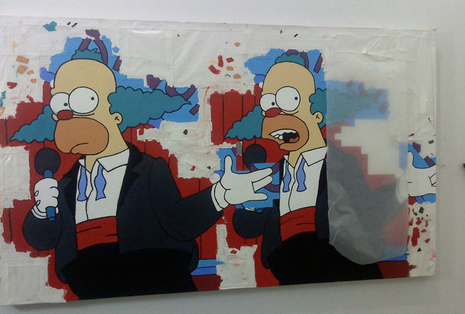
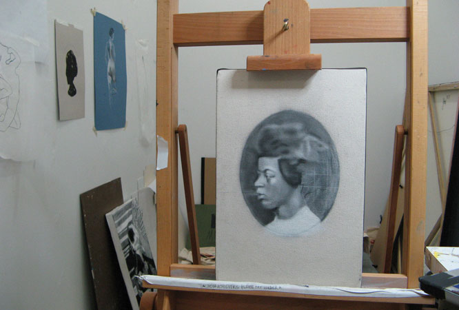
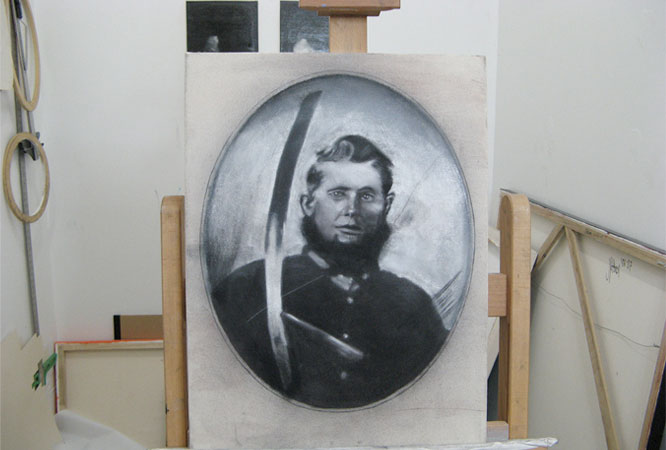
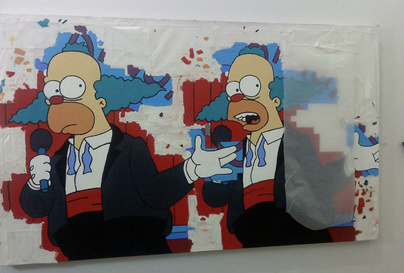
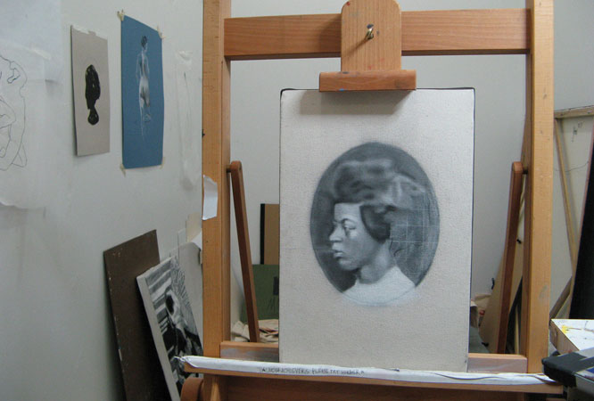
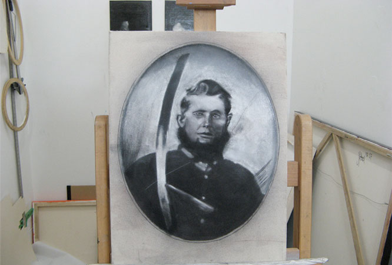

These new works portray influential African American women with roots in the Champaign-Urbana and University of Illinois communities. The portraits acknowledge the adversities and triumphs seen by both African Americans and women. This project honors the African American women of this area who have bettered themselves, set new precedents and inspired future generations.
EXHIBITION OPENING
Thursday, February 24, 7:00-9:00 pm
Artist talk at 8:00
Murphy Gallery @ the Y
AFRICAN AMERICAN WOMEN AND FEMINIST ACTIVISM
Beverly Guy Sheftall, Director, Women’s Research and Resource Center, Spelman College
Thursday, March 17, 7:30 pm
Murphy Gallery @ the Y
Art @ the Y
University YMCA, 1001 South Wright Street, Champaign
Exhibition sponsored by: Art @ the Y, an initiative of the University YMCA, the YWCA of the University of Illinois, SHURE, and Jonathan Pines/Private Studios